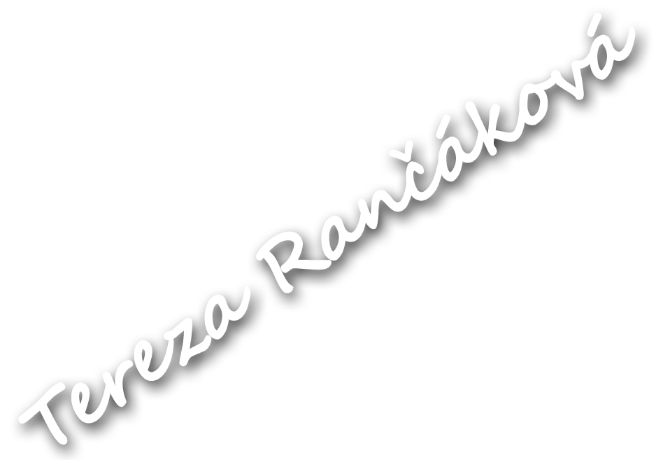
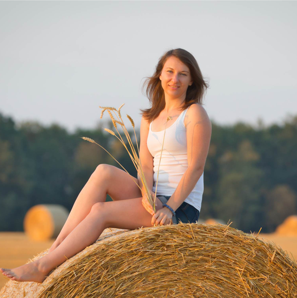
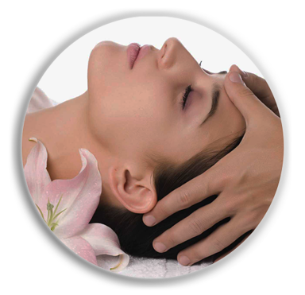
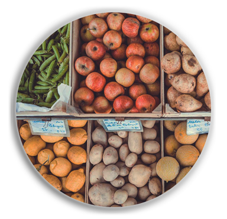
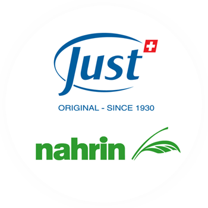

Tereza Rančáková
1
2
3

Jmenuji se Tereza Rančáková a jsem kvalifikovanou masérkou, nutriční specialistkou se zaměřením na psychosomatiku a odbornou poradkyní švýcarské firmy Just cs. Naše zdraví stojí na několika základních pilířích. Psychická pohoda, zdravé vztahy, správné stravování, pracovní uspokojení, adekvátní fyzický pohyb a především dostatečný odpočinek jsou však ty hlavní.
"Vše souvisí se vším"
Naše tělo reaguje na náš stravovací režim, naše psychické rozpoložení i na naši fyzickou aktivitu. Proto ke svým klientům přistupuji individuálně a snažím se jim poskytnout co možná nejvhodnější pomoc k jejich plnému zdraví.

Masáže
zdravotní i relaxační

Zdravá výživa
na každý den

Doplňky
Just & Nahrin